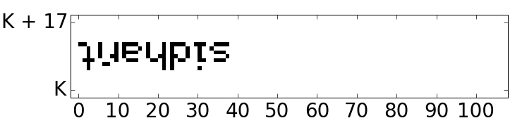

Work
These are all the projects I have worked on/contributed to.
- ClassTalkies
- Tupper's Self Referential Formula
- X 2015 Programming Questions
- Hitchhiker's Guide to Python by Kenneth Reitz
ClassTalkies was an Education Technology startup that I founded early 2014, it was aimed towards the new users of social media. It provided a easy way to communicate and a better way to collaborate.
For my 9th grade math project I used the tupper's self refernetial formula to make plots, as the numbers used by the formula were huge I wrote a Python program to plot it.
X is an annual interschool IT symposium, Organized by MINET. For the programming event I contributed in making the programming questions.
The python Guide is an opinionated guide that exists to provide both novice and expert Python developers a best practice handbook to the installation, configuration, and usage of Python on a daily basis. I'm in the top 50 contributers to this project.